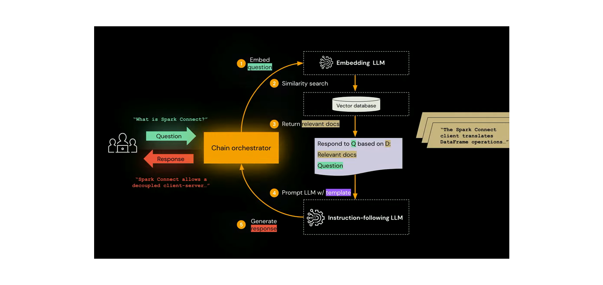

Reference Architecture - Retrieval-Augmented Generation for Gen AI Applications
The landscape of artificial intelligence (AI) is continually evolving, with new architectures and models emerging to tackle complex tasks. One such innovative approach is the Retrieval-Augmented Generation (RAG) model, a system that combines the strengths of information retrieval and language generation to enhance AI applications. In this blog, we delve into a reference architecture that outlines how to build General AI applications using RAG.
What is Retrieval-Augmented Generation (RAG)?
RAG is an AI model that merges the best of two worlds: the precision of information retrieval and the creativity of generative language models. This architecture is designed to first retrieve information relevant to a given query and then generate a coherent and contextually appropriate response.
The RAG Reference Architecture

The reference architecture for a RAG-based AI application is composed of several components that work together to process queries and generate responses. Here's a step-by-step breakdown:
- Embedding the Question: The journey begins when a user inputs a question. The system uses an Embedding Language Model (LLM) to convert the query into a vectorized form. This transformation is crucial as it allows the AI to process the question in a mathematical space where semantic similarities can be identified.
- Similarity Search: Once the question is vectorized, a similarity search is conducted against a vector database. This database contains a multitude of indexed vectors representing different pieces of information. The search's aim is to find the most relevant documents that correspond to the question's vector.
- Retrieving Relevant Documents: The system fetches documents that are semantically close to the query. These documents serve as a knowledge base from which the AI can draw accurate information when crafting its response.
- Generating Responses: With the relevant documents at hand, the AI now uses a Prompt LLM with templates to generate a draft response. This is where the creative aspect of language models comes into play, synthesizing the retrieved information into a comprehensible answer.
- Crafting the Final Response: The draft response is then refined by an instruction-following Language Model (LLM) to ensure it aligns with the query's intent and the user's needs. This step ensures that the final response is not only accurate but also relevant and useful.
Example Use Case: Technical Blog site chat app
To illustrate the RAG model in action, consider Blog site chat app — a hypothetical application that facilitates decoupled client-server communication. When asked, "What is Spark?" the system would:
- Embed the question using an LLM to understand the query context.
- Conduct a similarity search to find documents related to Spark Connect.
- Retrieve those documents and use them as a basis for generating a response.
- Generate a draft response that explains about Spark enables decoupled client-server communication.
- Refine the response to ensure clarity and completeness before presenting it to the user.
The Power of RAG in AI
RAG systems are powerful because they can adapt to a wide range of domains, from customer service to education. They leverage extensive databases of information, enabling them to provide accurate and detailed responses. Moreover, the generative capabilities of the model ensure that responses are not only correct but also naturally phrased and context-aware.